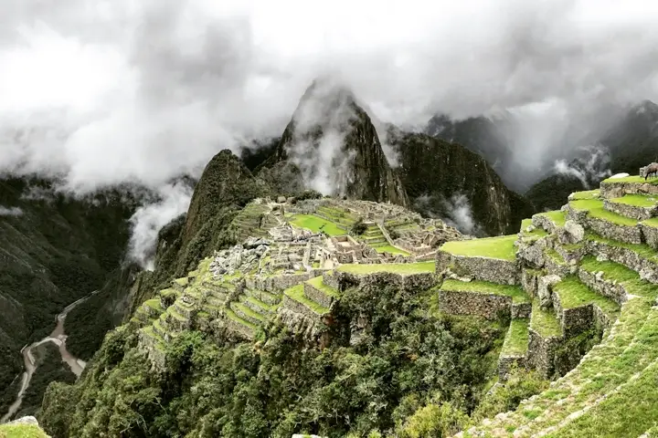
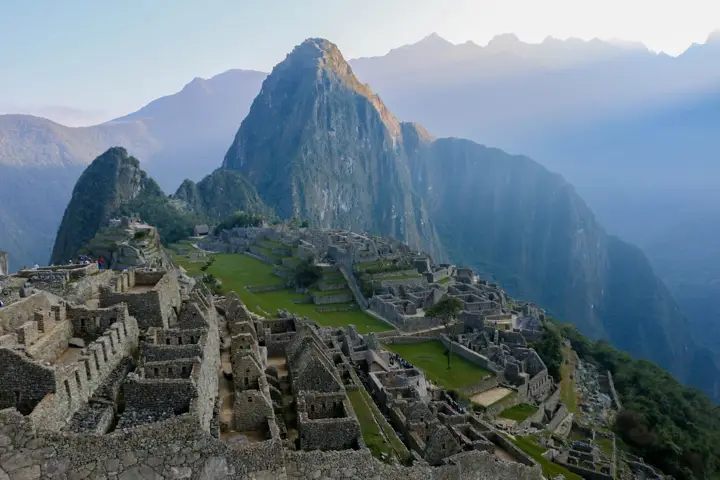
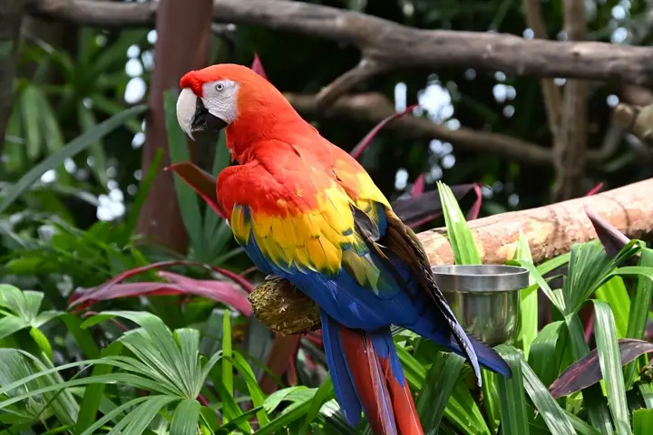
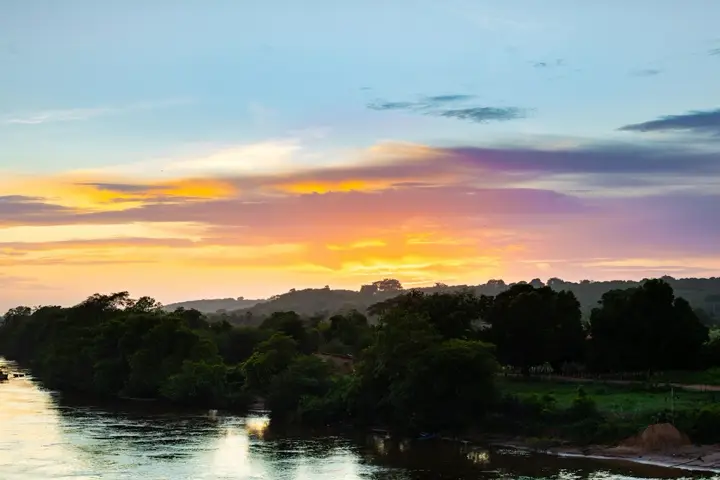
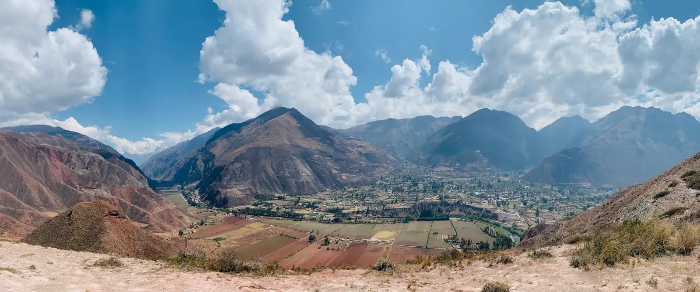
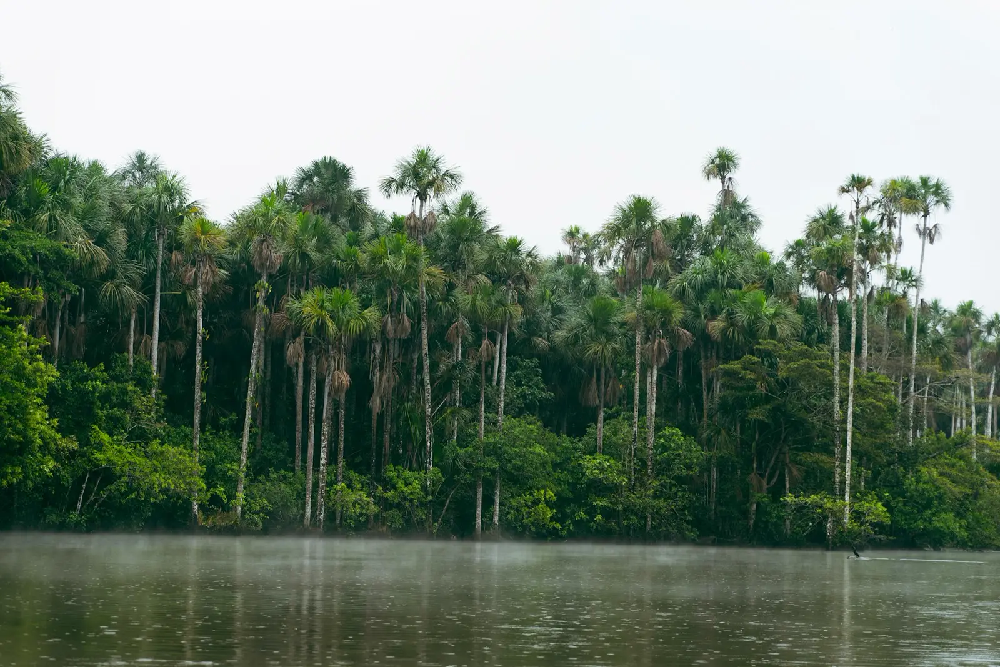

Agencia de viajes en Cusco
Tours a Machu Picchu, Cusco y Tambopata
Del Valle Sagrado a la selva amazónica, con una agencia de Cusco.
01
Tours a Machu Picchu
En tren, en carro o caminando: todas las formas de llegar a la ciudadela inca desde Cusco.
-
 1 día
Fácil · 2,430 m
Machu Picchu Full Day
Cusco · Ollantaytambo · Aguas Calientes · Machu Picchu
Precio por confirmarVer tour →
1 día
Fácil · 2,430 m
Machu Picchu Full Day
Cusco · Ollantaytambo · Aguas Calientes · Machu Picchu
Precio por confirmarVer tour →
-
 2 días / 1 noche
Fácil · hasta 3,000 m
Valle Sagrado y Machu Picchu
Pisac · Urubamba · Ollantaytambo · Aguas Calientes
Precio por confirmarVer tour →
2 días / 1 noche
Fácil · hasta 3,000 m
Valle Sagrado y Machu Picchu
Pisac · Urubamba · Ollantaytambo · Aguas Calientes
Precio por confirmarVer tour →
-

2 días / 1 noche Moderada · 2,430 m Machu Picchu en carro Santa María · Santa Teresa · Hidroeléctrica · Aguas Calientes Precio por confirmarVer tour → -

1 día Exigente · 2,720 m Machu Picchu y Huayna Picchu Cusco · Aguas Calientes · Machu Picchu · Huayna Picchu Precio por confirmarVer tour →
02
Tours en Cusco
City Tour, Valle Sagrado, Maras y Moray, la Montaña de 7 Colores y la Laguna Humantay.
-
 Medio día
Fácil · 3,400 a 3,700 m
City Tour Cusco
Qorikancha · Catedral · Sacsayhuamán · Q'enqo
Precio por confirmarVer tour →
Medio día
Fácil · 3,400 a 3,700 m
City Tour Cusco
Qorikancha · Catedral · Sacsayhuamán · Q'enqo
Precio por confirmarVer tour →
-
1 día
Fácil · hasta 3,760 m
Valle Sagrado de los Incas
Pisac · Urubamba · Ollantaytambo · Chinchero
Precio por confirmarVer tour →
-
 Medio día
Fácil · 3,500 m
Maras y Moray
Moray · Salineras de Maras
Precio por confirmarVer tour →
Medio día
Fácil · 3,500 m
Maras y Moray
Moray · Salineras de Maras
Precio por confirmarVer tour →
-
 1 día
Exigente · más de 5,000 m
Montaña de 7 Colores
Cusipata · Vinicunca
Precio por confirmarVer tour →
1 día
Exigente · más de 5,000 m
Montaña de 7 Colores
Cusipata · Vinicunca
Precio por confirmarVer tour →
03
Caminatas a Machu Picchu
El Camino Inca y las rutas alternativas, para llegar a Machu Picchu a pie.
-
 4 días / 3 noches
Exigente · paso a 4,215 m
Camino Inca a Machu Picchu
Km 82 · Llactapata · Abra Warmiwañusca · Wiñay Wayna
Precio por confirmarVer tour →
4 días / 3 noches
Exigente · paso a 4,215 m
Camino Inca a Machu Picchu
Km 82 · Llactapata · Abra Warmiwañusca · Wiñay Wayna
Precio por confirmarVer tour →
- 2 días / 1 noche Moderada · 2,720 m Camino Inca corto Km 104 · Wiñay Wayna · Puerta del Sol · Aguas Calientes Precio por confirmarVer tour →
-
 5 días / 4 noches
Exigente · paso a unos 4,600 m
Salkantay a Machu Picchu
Mollepata · Laguna Humantay · Abra Salkantay · Santa Teresa
Precio por confirmarVer tour →
5 días / 4 noches
Exigente · paso a unos 4,600 m
Salkantay a Machu Picchu
Mollepata · Laguna Humantay · Abra Salkantay · Santa Teresa
Precio por confirmarVer tour →
04
Tours a Tambopata
La selva amazónica desde Puerto Maldonado: lagos, collpas de guacamayos y noches en el bosque.
-
 3 días / 2 noches
Fácil · selva baja
Tambopata
Puerto Maldonado · Río Madre de Dios · Lago Sandoval · Reserva Nacional Tambopata
Precio por confirmarVer tour →
3 días / 2 noches
Fácil · selva baja
Tambopata
Puerto Maldonado · Río Madre de Dios · Lago Sandoval · Reserva Nacional Tambopata
Precio por confirmarVer tour →
-

4 días / 3 noches Moderada · selva baja Tambopata y collpa de guacamayos Puerto Maldonado · Lago Sandoval · Collpa de guacamayos · Reserva Nacional Tambopata Precio por confirmarVer tour → -

1 día Fácil · selva baja Lago Sandoval Full Day Puerto Maldonado · Río Madre de Dios · Lago Sandoval Precio por confirmarVer tour →
05
Paquetes turísticos
Varios días combinados, con los traslados resueltos: Cusco, Machu Picchu y la selva.




06 — Destinos
07
¿Por qué viajar con Inkas Golden?
- 1
Agencia de Cusco
Estamos en Cusco: te atendemos antes, durante y después del viaje. [Dirección de la oficina por confirmar]
- 2
[Años de experiencia]
[Desde qué año opera la agencia]
- 3
[Guías oficiales]
[Idiomas de los guías y si son licenciados]
- 4
[Agencia autorizada]
[Registro en DIRCETUR / MINCETUR, si lo tiene]
08
Lo que dicen nuestros viajeros
[Reseñas reales de TripAdvisor o Google: 3 a 6, con nombre y país]
¿Cuál es la mejor época para viajar a Cusco y Machu Picchu?
La temporada seca, de mayo a septiembre, tiene cielos más despejados. De diciembre a marzo llueve más, pero hay menos gente.
¿Qué es el soroche y cómo evitarlo?
Es el malestar por la altura: Cusco está a unos 3,400 m. Descansa el primer día, come liviano, toma bastante agua y deja los tours más altos para después.
¿Con cuánta anticipación reservo Machu Picchu?
Las entradas tienen cupos diarios. En temporada alta conviene reservar con semanas de anticipación, y el Camino Inca con meses.
¿El Camino Inca está abierto todo el año?
No: cierra en febrero por mantenimiento. El resto del año necesita permiso oficial, que solo tramita una agencia autorizada.
¿Cómo llego a Tambopata?
En avión desde Cusco o Lima hasta Puerto Maldonado. Desde Cusco también hay buses por la carretera Interoceánica.

¿Listo para viajar?